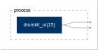
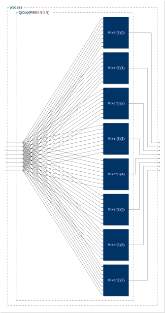

misc
UITester

autopan
capture
drumkit

matrix

midiTester

statespace
switcher


From here you can search these documents. Enter your search terms below.
| Keys | Action |
|---|---|
| ? | Open this help |
| n | Next page |
| p | Previous page |
| s | Search |